초록
많은 실제 시나리오에서 에이전트 외부에서 주어지는 보상(extrinsic reward)은 극도로 희소하거나 아예 존재하지 않는다. 이러한 경우, 호기심은 에이전트가 환경을 탐색하고 향후 유용할 수 있는 기술을 학습할 수 있도록 하는 내재적 보상(intrinsic reward) 신호 역할을 할 수 있다. 본 논문에서는 호기심을 자기지도 역역학 모델(self-supervised inverse dynamics model)을 통해 학습된 시각적 특징 공간(visual feature space)에서 에이전트가 자신의 행동 결과를 예측하는 능력의 오차로 정의한다. 우리의 공식화는 이미지와 같은 고차원 연속 상태 공간으로 확장 가능하며, 픽셀을 직접 예측하는 어려움을 우회하고, 결정적으로 에이전트에 영향을 미칠 수 없는 환경의 측면들을 무시한다. 제안된 접근법은 두 가지 환경인 VizDoom과 Super Mario Bros에서 평가된다. 세 가지 광범위한 설정이 조사된다: 1) 희소한 외재적 보상 환경으로, 호기심을 통해 목표에 도달하기 위해 필요한 환경과의 상호작용 횟수를 크게 줄일 수 있다. 2) 외재적 보상이 없는 탐색 환경으로, 호기심이 에이전트로 하여금 더 효율적으로 탐색하도록 유도한다. 3) 보지 못한 시나리오(예: 동일한 게임의 새로운 레벨)로의 일반화 환경으로, 이전 경험에서 얻은 지식이 에이전트가 처음부터 시작하는 것보다 훨씬 빠르게 새로운 장소를 탐색하는 데 도움을 준다.
1 서론
강화학습 알고리즘은 환경이 제공하는 보상을 극대화하여 목표 작업을 달성하기 위한 정책을 학습하는 것을 목표로 한다. 일부 시나리오에서는 이러한 보상이 에이전트에게 지속적으로 제공된다. 예를 들어 Atari 게임의 실시간 점수 (Mnih et al., 2015)나 도달 작업(reaching task)에서 로봇 팔과 물체 사이의 거리 (Lillicrap et al., 2016) 등이 있다. 그러나 많은 실제 시나리오에서 에이전트 외부의 보상은 극도로 희소하거나 아예 결여되어 있으며, 정교한 보상 함수(shaped reward function)를 설계하는 것이 불가능하다. 이는 에이전트가 미리 지정된 목표 상태에 도달하는 데 성공해야만 정책을 업데이트하기 위한 강화를 받기 때문에 문제가 된다. 우연히 목표 상태에 도달하기를 바라는 것(즉, 무작위 탐색)은 가장 단순한 환경을 제외하고는 무익할 가능성이 높다.
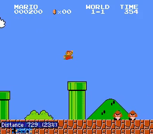
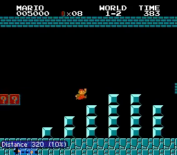
인간 에이전트로서 우리는 평생 동안 한두 번 경험할까 말까 할 정도로 매우 희소한 보상 속에서 활동하는 데 익숙하다. 놀이터에서 화창한 일요일 오후를 즐기는 세 살짜리 아이에게 대학, 좋은 직장, 집, 가족과 같은 현대 생활의 대부분의 전유물은 너무나 먼 미래의 일이라 유용한 강화 신호를 제공하지 못한다. 그럼에도 불구하고, 그 세 살짜리 아이는 심리학자들이 내재적 동기(intrinsic motivation) (Ryan, 2000) 또는 호기심(curiosity) (Silvia, 2012)이라 부르는 것을 사용하여 놀이터에서 스스로 즐겁게 노는 데 아무런 문제가 없다. 동기/호기심은 환경을 탐색하고 새로운 상태를 발견하려는 욕구를 설명하는 데 사용되어 왔다. 프랑스어 단어 flâneur는 호기심에 이끌린 관찰자의 개념, 즉 “어떤 의무나 시급함에도 얽매이지 않고 유유자적하게 걷는 보행자”(Cornelia Otis Skinner)라는 개념을 완벽하게 담아낸다. 더 일반적으로, 호기심은 미래에 보상을 추구할 때 유용하게 쓰일 수 있는 새로운 기술을 학습하는 방법이다.
마찬가지로, 강화학습에서도 외재적 보상이 희소할 때마다 내재적 동기/보상이 매우 중요해진다. 내재적 보상의 대부분의 공식화는 크게 두 가지 범주로 나눌 수 있다: 1) 에이전트가 "새로운(novel)" 상태를 탐색하도록 장려하는 것 (Bellemare et al., 2016; Poupart et al., 2006; Lopes et al., 2012), 또는 2) 에이전트가 자신의 행동 결과를 예측하는 능력(즉, 환경에 대한 지식)의 오차/불확실성을 줄이는 행동을 수행하도록 장려하는 것 (Schmidhuber, 1991, 2010; Singh et al., 2005; Mohamed & Rezende, 2015; Stadie et al., 2015; Houthooft et al., 2016)이다.
"새로움"을 측정하려면 환경 상태 분포에 대한 통계적 모델이 필요한 반면, 예측 오차/불확실성을 측정하려면 시간 에 실행된 현재 상태 와 행동 이 주어졌을 때 다음 상태()를 예측하는 환경 역학(environmental dynamics) 모델을 구축해야 한다. 이 두 모델 모두 이미지와 같은 고차원 연속 상태 공간에서는 구축하기 어렵다. 추가적인 과제는 에이전트의 구동 노이즈로 인해 말단 효과기(end-effector)가 확률적으로 움직이는 것과, 더 근본적으로는 환경 자체의 고유한 확률성으로 인한 에이전트-환경 시스템의 확률성(stochasticity)을 다루는 데 있다. (Schmidhuber, 2010)의 예를 들면, 상태 입력으로 이미지를 받는 에이전트가 백색 소음이 나오는 TV 화면을 관찰하고 있다면, 모든 상태가 새로울 것이며 미래의 어떤 픽셀 값도 예측하는 것이 불가능할 것이다. 이러한 확률성의 다른 예로는 다른 움직이는 물체의 그림자로 인한 외관 변화, 방해물(distractor)의 존재, 또는 움직임을 예측하기 어려울 뿐만 아니라 에이전트의 목표와도 무관한 환경 내 다른 에이전트들이 있다. 다소 다르지만 관련된 과제는 물리적으로(그리고 아마도 시각적으로도) 다르지만 기능적으로 유사한 환경의 부분들 사이에서 일반화하는 것이며, 이는 대규모 문제에서 매우 중요하다. 이러한 모든 문제에 대해 제안된 한 가지 해결책은 예측하기 어렵지만 "학습 가능한(learnable)" 상태를 만났을 때만 에이전트에게 보상을 주는 것이다 (Schmidhuber, 1991). 그러나 학습 가능성을 추정하는 것은 사소하지 않은 문제이다 (Lopes et al., 2012).
본 연구는 에이전트가 자신의 행동 결과를 예측하는 것이 얼마나 어려운지, 즉 현재 상태와 실행된 행동이 주어졌을 때 다음 상태를 예측하는 것이 얼마나 어려운지에 기반하여 내재적 보상 신호를 생성하는 광범위한 방법론 범주에 속한다. 그러나 우리는 다음과 같은 핵심 통찰을 통해 기존 예측 접근법들의 대부분의 함정을 피할 수 있었다. 즉, 우리는 에이전트의 행동으로 인해 발생할 수 있거나 에이전트에 영향을 미칠 수 있는 환경의 변화만을 예측하고 나머지는 무시한다. 즉, 가공되지 않은 감각 공간(예: 픽셀)에서 예측을 수행하는 대신, 에이전트가 수행한 행동과 관련된 정보만 표현되는 특징 공간으로 감각 입력을 변환한다. 우리는 에이전트의 현재 상태와 다음 상태가 주어졌을 때 에이전트의 행동을 예측하는 대리 역역학(proxy inverse dynamics) 작업에 대해 신경망을 훈련하는 자기지도 학습을 사용하여 이 특징 공간을 학습한다. 신경망은 행동만 예측하면 되므로, 에이전트 자체에 영향을 미치지 않는 환경의 변화 요인을 특징 임베딩 공간 내에 표현할 동기가 없다. 그런 다음 이 특징 공간을 사용하여 현재 상태의 특징 표현과 행동이 주어졌을 때 다음 상태의 특징 표현을 예측하는 순역학(forward dynamics) 모델을 훈련한다. 우리는 순역학 모델의 예측 오차를 에이전트에게 내재적 보상으로 제공하여 호기심을 장려한다.
호기심의 역할은 희소한 보상을 가진 작업을 해결하는 맥락에서 널리 연구되어 왔다. 우리의 의견으로는 호기심에는 다른 두 가지 근본적인 용도가 있다. 호기심은 에이전트가 새로운 지식을 탐구하기 위해 환경을 탐색하는 데 도움을 준다(탐색적 행동의 바람직한 특징은 에이전트가 더 많은 지식을 얻을수록 탐색 능력이 향상되어야 한다는 것이다). 나아가, 호기심은 에이전트가 미래의 시나리오에서 도움이 될 수 있는 기술을 학습하는 메커니즘이다. 본 논문에서는 이 세 가지 역할 모두에서 우리가 제안한 호기심 공식화의 효과를 평가한다.
우리는 먼저 VizDoom 환경에서 희소한 외재적 보상을 가진 3D 탐색 작업에 대해 호기심 신호가 있는 경우와 없는 경우의 A3C 에이전트 (Mnih et al., 2016)의 성능을 비교한다. 우리는 호기심 기반 내재적 보상이 이러한 작업을 완수하는 데 중요하다는 것을 보여준다(섹션 4.1 참조). 다음으로, 외재적 보상이 전혀 없는 상황에서도 호기심 많은 에이전트가 좋은 탐색 정책을 학습함을 보여준다. 예를 들어, 보상으로 호기심만 사용하여 훈련된 에이전트는 Super Mario Bros의 레벨-1 중 상당 부분을 통과할 수 있다. 마찬가지로 VizDoom에서도 에이전트는 벽에 부딪히거나 구석에 갇히는 대신 복도를 따라 지능적으로 걷는 법을 배운다(섹션 4.2 참조). 자연스럽게 이어지는 질문은 학습된 탐색 행동이 에이전트가 스스로 훈련한 물리적 공간에만 국한되는지, 아니면 보지 못한 시나리오에서도 에이전트가 더 나은 성능을 발휘할 수 있도록 하는지 여부이다. 우리는 Mario의 첫 번째 레벨에서 학습된 탐색 정책이 에이전트가 후속 레벨을 더 빠르게 탐색하는 데 도움이 됨을 보여주고(그림 1에 표시), 호기심 많은 VizDoom 에이전트가 학습한 지능적인 보행 행동이 새로운 텍스처를 가진 완전히 새로운 맵으로 전이됨을 보여준다(섹션 4.3 참조). 이러한 결과는 제안된 방법이 명시적인 목표가 없는 상황에서도 에이전트가 일반화 가능한 기술을 학습할 수 있도록 함을 시사한다.
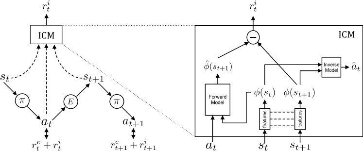
2 호기심 기반 탐색
우리 에이전트는 두 개의 하위 시스템으로 구성된다. 하나는 호기심 기반 내재적 보상 신호를 출력하는 보상 생성기이고, 다른 하나는 해당 보상 신호를 극대화하기 위한 행동 시퀀스를 출력하는 정책이다. 내재적 보상 외에도 에이전트는 선택적으로 환경으로부터 일부 외재적 보상을 받을 수도 있다. 시간 에 에이전트에 의해 생성된 내재적 호기심 보상을 이라 하고 외재적 보상을 라 하자. 정책 하위 시스템은 이 두 보상의 합 을 극대화하도록 훈련되며, 이때 는 대부분(항상은 아니더라도) 0이다.
우리는 매개변수 을 가진 심층 신경망으로 정책 을 표현한다. 상태 에 있는 에이전트가 주어지면, 정책에서 샘플링된 행동 을 실행한다. 는 보상의 기대합을 극대화하도록 최적화된다,
| (1) |
별도로 명시하지 않는 한, 우리는 매개변수화된 정책 을 나타내기 위해 표기법 을 사용한다. 우리의 호기심 보상 모델은 잠재적으로 다양한 정책 학습 방법과 함께 사용될 수 있다. 본 논문에서 논의되는 실험에서는 정책 학습을 위해 비동기 Advantage Actor-Critic 정책 그래디언트(A3C) (Mnih et al., 2016)를 사용한다. 우리의 주요 기여는 이미지와 같은 고차원 연속 상태 공간으로 확장 가능하고, 픽셀을 예측하는 까다로운 문제를 우회하며, 에이전트에게 영향을 미치지 않는 환경의 예측 불가능한 측면에 영향을 받지 않는, 에이전트의 환경에 대한 지식의 예측 오차에 기반한 내재적 보상 신호를 설계한 것이다.
2.1 호기심 보상으로서의 예측 오차
원시 감각 공간(예: 이 이미지에 해당하는 경우)에서 예측을 수행하는 것은 픽셀을 직접 예측하기 어려울 뿐만 아니라, 픽셀을 예측하는 것이 최적화하기에 적절한 목표인지조차 불분명하기 때문에 바람직하지 않다. 그 이유를 알아보기 위해 픽셀 공간에서의 예측 오차를 호기심 보상으로 사용하는 경우를 생각해 보자. 에이전트가 미풍에 흔들리는 나뭇잎의 움직임을 관찰하고 있는 시나리오를 가정해 보자. 미풍을 모델링하는 것은 본질적으로 어렵기 때문에, 각 나뭇잎의 픽셀 위치를 예측하는 것은 훨씬 더 어렵다. 이는 픽셀 예측 오차가 계속 높게 유지되어 에이전트가 항상 나뭇잎에 대해 호기심을 갖게 됨을 의미한다. 하지만 나뭇잎의 움직임은 에이전트에게 중요하지 않으므로 이에 대한 지속적인 호기심은 바람직하지 않다. 근본적인 문제는 상태 공간의 일부 영역은 단순히 모델링할 수 없다는 사실을 에이전트가 인지하지 못하여, 에이전트가 인위적인 호기심의 덫에 빠져 탐색을 중단할 수 있다는 점이다. 방문한 상태의 횟수를 테이블 형태로 기록하는 신규성 추구 탐색 기법(또는 이를 연속 상태 공간으로 확장한 기법) 역시 이러한 문제로 고통받는다. 예측 오차 대신 학습 진행 상황(learning progress)을 측정하는 것이 과거에 하나의 해결책으로 제안된 바 있다 (Schmidhuber, 1991). 불행히도 현재로서는 학습 진행 상황을 측정할 수 있는 계산적으로 실현 가능한 메커니즘이 알려져 있지 않다.
원시 관측 공간이 아니라면, 예측 오차가 호기심의 좋은 척도를 제공할 수 있도록 예측을 수행하기에 적절한 특징 공간(feature space)은 무엇인가? 이 질문에 답하기 위해 에이전트의 관측을 변화시킬 수 있는 모든 요인을 다음 세 가지 경우로 나누어 보자. (1) 에이전트에 의해 제어될 수 있는 것, (2) 에이전트가 제어할 수는 없지만 에이전트에게 영향을 미칠 수 있는 것(예: 다른 에이전트가 운전하는 차량), (3) 에이전트의 제어 범위를 벗어나며 에이전트에게 영향을 미치지 않는 것(예: 움직이는 나뭇잎). 호기심을 위한 좋은 특징 공간은 (1)과 (2)를 모델링하고 (3)에 의해서는 영향을 받지 않아야 한다. 후자의 이유는 에이전트에게 중요하지 않은 변화 요인이 있다면, 에이전트가 이에 대해 알 필요가 없기 때문이다.
2.2 탐색을 위한 자기지도 예측
모든 환경에 대해 특징 표현(feature representation)을 수작업으로 설계하는 대신, 우리의 목표는 학습된 특징 공간에서의 예측 오차가 좋은 내재적 보상 신호를 제공하도록 특징 표현을 학습하는 일반적인 메커니즘을 고안하는 것이다. 우리는 이러한 특징 공간이 두 개의 서브 모듈을 가진 심층 신경망을 학습함으로써 학습될 수 있음을 제안한다. 첫 번째 서브 모듈은 원시 상태 을 특징 벡터 로 인코딩하고, 두 번째 서브 모듈은 연속적인 두 상태의 특징 인코딩 를 입력으로 받아 에이전트가 상태 에서 로 이동하기 위해 취한 행동 을 예측한다. 이 신경망을 학습시키는 것은 다음과 같이 정의된 함수 을 학습하는 것과 같다.
| (2) |
여기서 은 행동 의 예측 추정치이며, 신경망 매개변수 는 다음을 최적화하도록 학습된다.
| (3) |
여기서 은 예측된 행동과 실제 행동 사이의 불일치를 측정하는 손실 함수이다. 이 이산적인(discrete) 경우, 의 출력은 가능한 모든 행동에 대한 소프트맥스(soft-max) 분포가 되며, 을 최소화하는 것은 다항 분포(multinomial distribution) 하에서 의 최대 우도 추정(maximum likelihood estimation)과 같다. 학습된 함수 는 역동역학 모델(inverse dynamics model)로도 알려져 있으며, 을 학습하는 데 필요한 튜플 은 에이전트가 현재 정책 을 사용하여 환경과 상호작용하는 동안 획득된다.
역동역학 모델 외에도, 우리는 과 을 입력으로 받아 타임스텝 에서의 상태의 특징 인코딩을 예측하는 또 다른 신경망을 학습시킨다.
| (4) |
여기서 은 의 예측 추정치이며, 신경망 매개변수 는 손실 함수 을 최소화함으로써 최적화된다.
| (5) |
학습된 함수 은 순동역학 모델(forward dynamics model)로도 알려져 있다. 내재적 보상 신호 은 다음과 같이 계산된다.
| (6) |
여기서 은 스케일링 인자(scaling factor)이다. 호기심 기반 내재적 보상 신호를 생성하기 위해, 우리는 각각 식 3과 5에 기술된 순동역학 및 역동역학 손실을 공동으로 최적화한다. 역모델은 에이전트의 행동을 예측하는 데 관련된 정보만을 인코딩하는 특징 공간을 학습하고, 순모델은 이 특징 공간에서 예측을 수행한다. 우리는 이 제안된 호기심 공식을 내재적 호기심 모듈(Intrinsic Curiosity Module, ICM)이라 부른다. 이 특징 공간은 에이전트의 행동에 영향을 받지 않는 환경적 특징을 인코딩할 이유가 없기 때문에, 우리 에이전트는 본질적으로 예측 불가능한 환경 상태에 도달하더라도 보상을 받지 않으며, 에이전트의 탐색 전략은 방해물(distractor)의 존재, 조명 변화 또는 환경의 기타 성가신 변화 요인에 대해 강건할 것이다. 공식의 시각적 설명은 그림 2을 참조하라.
인식 작업(recognition tasks)을 위한 특징을 학습하기 위해 역모델을 사용하는 방법이 연구된 바 있다 (Jayaraman & Grauman, 2015; Agrawal et al., 2015). Agrawal 등 (2016)은 물체를 미는 작업(pushing objects)에 대한 특징 표현을 학습하기 위해 공동 역-순동역학 모델(joint inverse-forward model)을 구축했다. 그러나 그들은 순모델을 역모델 특징 학습을 위한 정규화기(regularizer)로만 사용한 반면, 우리는 순모델 예측의 오차를 에이전트의 정책을 학습시키기 위한 호기심 보상으로 활용한다.
3 실험 환경 설정
우리의 호기심 모듈이 탐색을 개선하고 새로운 시나리오에 대한 일반화 능력을 제공하는지 평가하기 위해, 두 가지 시뮬레이션 환경을 사용한다. 이 섹션에서는 환경의 세부 사항과 실험 설정에 대해 설명한다.
환경
우리가 평가하는 첫 번째 환경은 VizDoom (Kempka et al., 2016) 게임이다. 우리는 에이전트의 행동 공간이 전진, 좌회전, 우회전, 무행동(no-action)의 네 가지 이산적 행동으로 구성된 Doom 3D 내비게이션 태스크를 고려한다. 모든 실험에서 우리의 테스트 설정은 OpenAI Gym (Brockman et al., 2016)의 일부로 제공되는 'DoomMyWayHome-v0' 환경이다. 에이전트가 방탄조끼(vest)를 찾거나 최대 2100 타임 스텝을 초과하면 에피소드가 종료된다. 지도는 복도로 연결된 개의 방으로 구성되어 있으며, 에이전트는 스폰 위치에서 고정된 목표 위치에 도달하는 태스크를 수행한다. 에이전트에게는 방탄조끼를 찾았을 때만 +1의 희소한 터미널 보상(sparse terminal reward)이 제공되고, 그렇지 않으면 0이 제공된다. 일반화 실험을 위해, 우리는 (Dosovitskiy & Koltun, 2016)의 서로 다른 무작위 텍스처를 가진 다른 지도에서 사전 학습을 진행하며, 각 에피소드는 2100 타임 스텝 동안 지속된다. VizDoom의 샘플 프레임은 그림 3(a)에 나타나 있으며, 지도는 그림 4에서 설명된다. 이 지도에서 가장 먼 방에서 방탄조끼 위치에 도달하는 최적 정책(optimal policy)의 경우 약 350 스텝이 소요된다 (희소 보상).
우리의 두 번째 환경은 고전 닌텐도 게임인 슈퍼 마리오 브라더스(Super Mario Bros) (Paquette, 2016)이다. 우리는 이 게임의 4개 레벨을 고려한다. 첫 번째 레벨에서 사전 학습을 수행하고 이후 레벨에서 일반화 성능을 보여준다. 이 설정에서 우리는 (Paquette, 2016)을 따라 에이전트의 행동 공간을 14개의 고유한 행동으로 재매개변수화한다. 이 게임은 여러 버튼을 동시에 누를 수 있는 조이스틱을 사용하여 플레이하며, 버튼을 누르는 지속 시간이 취해지는 행동에 영향을 미친다. 이러한 특성은 게임을 특히 어렵게 만드는데, 예를 들어 높은 파이프나 넓은 틈새를 넘는 멀리뛰기를 하려면 에이전트가 동일한 행동을 연속으로 최대 12번까지 예측해야 하므로 장기 의존성(long-range dependency)이 발생한다. 마리오에 대한 우리의 모든 실험은 게임의 보상 없이 오직 호기심 신호만을 사용하여 학습된다.
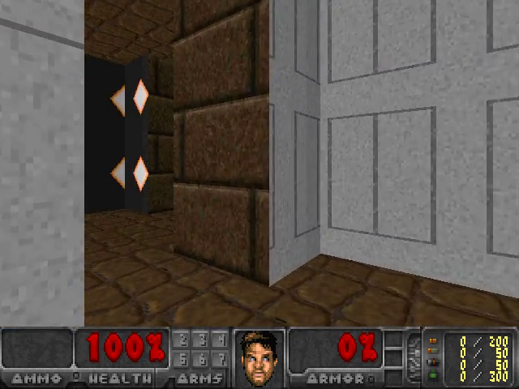
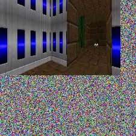
학습 세부 사항
본 연구의 모든 에이전트는 (Mnih et al., 2016)과 유사한 방식으로 전처리된 시각적 입력을 사용하여 학습된다. 입력 RGB 이미지는 그레이스케일로 변환되고 크기로 조정된다. 시간적 의존성을 모델링하기 위해, 환경의 상태 표현()은 현재 프레임과 이전 3개 프레임을 연결(concatenation)하여 구성된다. (Mnih et al., 2015, 2016)을 밀접하게 따라, 우리는 VizDoom 학습 시에는 4회의 행동 반복(action repeat)을 사용하고 마리오에서는 6회의 행동 반복을 사용한다. 그러나 추론(inference) 시에는 행동 반복 없이 정책을 샘플링한다. A3C의 비동기 학습 프로토콜을 따라, 모든 에이전트는 확률적 경사 하강법(stochastic gradient descent)을 사용하여 20개의 워커(worker)로 비동기식으로 학습되었다. 우리는 워커 간에 매개변수를 공유하지 않는 ADAM 옵티마이저를 사용했다.
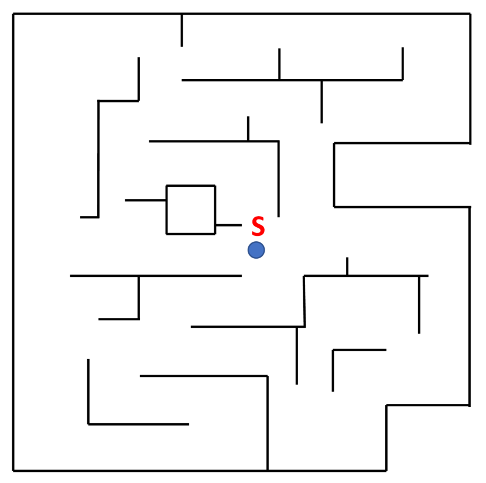
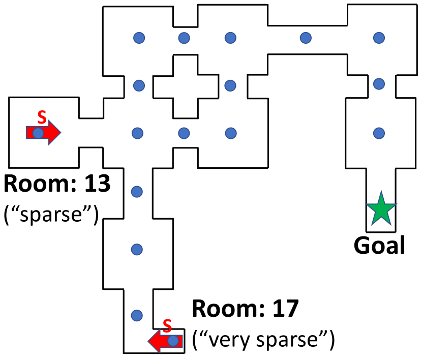
A3C 아키텍처
입력 상태 은 각각 32개의 필터, 3x3 커널 크기, 스트라이드 2, 패딩 1을 갖는 4개의 연속된 합성곱(convolution) 레이어를 통과한다. 각 합성곱 레이어 뒤에는 지수 선형 유닛(ELU; (Clevert et al., 2015))이 사용된다. 마지막 합성곱 레이어의 출력은 256개 유닛을 가진 LSTM으로 입력된다. 가치 함수(value function)와 행동을 LSTM 특징 표현으로부터 예측하기 위해 두 개의 별도 완전 연결(fully connected) 레이어가 사용된다.
고유 호기심 모듈(ICM) 아키텍처
고유 호기심 모듈(Intrinsic Curiosity Module, ICM)은 순방향(forward) 모델과 역방향(inverse) 모델로 구성된다. 역방향 모델은 먼저 각각 32개의 필터, 3x3 커널 크기, 스트라이드 2, 패딩 1을 갖는 4개의 연속된 합성곱 레이어를 사용하여 입력 상태 을 특징 벡터 로 매핑한다. 각 합성곱 레이어 뒤에는 ELU 비선형 활성화 함수가 사용된다. (즉, 네 번째 합성곱 레이어의 출력)의 차원은 288이다. 역방향 모델의 경우, 과 가 하나의 특징 벡터로 연결되어 256개 유닛의 완전 연결 레이어를 거친 후, 4개의 가능한 행동 중 하나를 예측하기 위해 4개 유닛을 가진 출력 완전 연결 레이어로 전달된다. 순방향 모델은 와 을 연결하고 이를 각각 256개 및 288개 유닛을 가진 두 개의 연속된 완전 연결 레이어에 통과시켜 구성된다. 의 값은 이고, 는 0.1이다. 식 (7)은 학습률 으로 최소화된다.
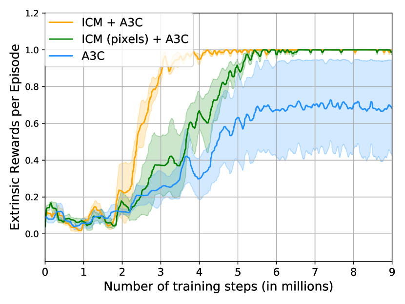
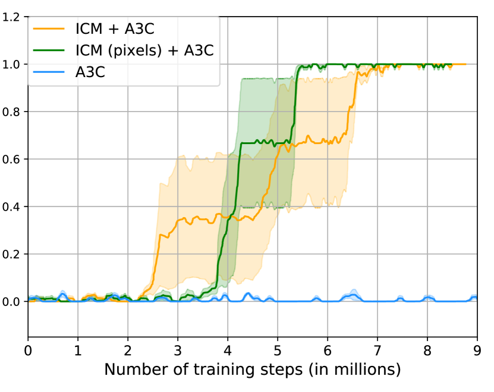
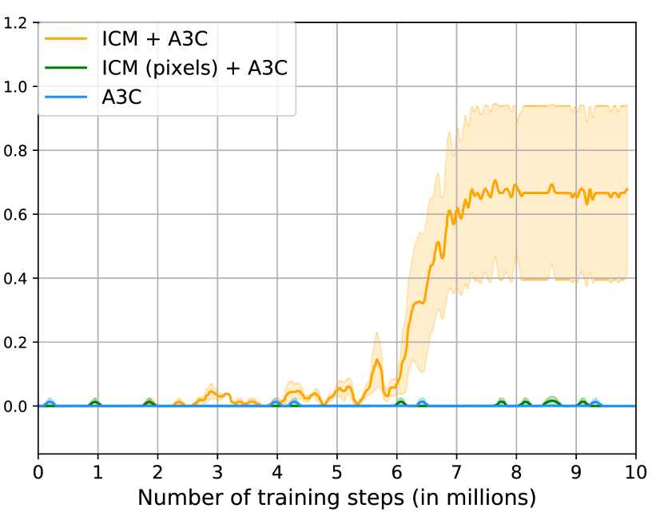
기준 방법론 (Baseline Methods)
‘ICM + A3C’는 내재적 호기심 모델(intrinsic curiosity model)과 A3C를 결합한 본 논문의 전체 알고리즘을 나타낸다. 다양한 실험에 걸쳐, 본 연구의 접근법을 세 가지 기준 모델과 비교한다. 첫 번째는 -그리디(greedy) 탐색을 사용하는 기본 ‘A3C’ 알고리즘이다. 두 번째는 역모델(inverse model)이 없는 ICM의 변형인 ‘ICM-pixels + A3C’로, 픽셀 공간에서 다음 관측을 예측할 때 순방향 모델(forward model)의 손실에만 의존하여 호기심 보상을 얻는다. 이를 설계하기 위해 역모델 레이어를 제거하고 순방향 모델에 디컨볼루션(deconvolution) 레이어를 추가했다. ICM-pixels는 구조적으로 ICM과 유사하지만, 환경에서 제어 불가능한 부분에 불변하는 임베딩을 학습할 수 없다. ICM-pixels는 관측 공간을 직접 사용하여 정보 획득량(information gain)을 계산하는 기존 방법들(Stadie et al., 2015; Schmidhuber, 2010)을 대표한다는 점에 주목하자. 본 연구는 호기심 계산을 위해 관측 공간을 직접 사용하는 것이 ICM처럼 임베딩을 학습하는 것보다 성능이 현저히 떨어진다는 것을 보여준다. 마지막으로, TRPO로 학습된 변분 정보 최대화(variational information maximization, VIME)(Houthooft et al., 2016) 기반의 최신 탐색 방법들과의 비교를 포함한다.
4 실험 (Experiments)
본 연구는 제안된 내재적 호기심 신호가 있을 때와 없을 때 학습된 정책의 성능을 VizDoom과 Super Mario Bros 두 가지 환경에서 정성적 및 정량적으로 평가한다. 세 가지 광범위한 설정이 평가된다: a) 목표 도달 시 주어지는 희소한 외재적 보상 (섹션 4.1); b) 외재적 보상이 없는 탐색 (섹션 4.2); 그리고 c) 새로운 시나리오에 대한 일반화 (섹션 4.3). VizDoom에서 일반화는 새로운 텍스처를 가진 새로운 맵에서 평가되며, Mario에서는 후속 게임 레벨에서 평가된다.
4.1 희소한 외재적 보상 설정 (Sparse Extrinsic Reward Setting)
섹션 3에서 설명한 ‘DoomMyWayHome-v0’ 설정을 사용하여 VizDoom에서 외재적 보상 실험을 수행한다. 외재적 보상은 희소하며, 에이전트가 맵의 고정된 위치에 있는 목표(조끼)를 찾았을 때만 제공된다. 에이전트의 초기 생성 위치와 목표 위치 사이의 거리를 변경하여 이 목표 지향적 탐색 작업의 난이도를 체계적으로 조절했다. 거리가 멀어질수록 무작위 탐색으로 목표 위치에 도달할 확률이 낮아지므로 보상이 더 희소해진다고 할 수 있다.
보상 희소성 정도의 다양화:
본 연구는 "조밀한(dense)", "희소한(sparse)", "매우 희소한(very-sparse)" 보상을 가진 세 가지 설정을 고려한다 (그림 4(b) 참조). 이러한 설정에서 보상은 항상 에피소드 종료 시에만 주어지며, 목표에 도달하거나 최대 2100단계가 지나면 에피소드가 종료된다. "조밀한" 보상 케이스의 경우, 에이전트는 맵 전체에 균일하게 분포된 17개의 가능한 생성 위치 중 하나에 무작위로 생성된다. 이는 어려운 탐색 작업이 아닌데, 에이전트가 때때로 목표와 가까운 곳에서 무작위로 초기화되어 무작위 -그리디 탐색을 통해 상당히 높은 확률로 목표에 도달할 수 있기 때문이다. "희소한" 및 "매우 희소한" 보상 케이스의 경우, 에이전트는 항상 각각 Room-13과 Room-17에서 생성되며, 이는 최적 정책 하에서 목표로부터 각각 단계 및 단계 떨어진 거리이다. 이 방들에서 목표에 도달하려면 긴 일련의 지향성 행동들이 필요하므로, 이러한 설정은 어려운 목표 지향적 탐색 문제가 된다.
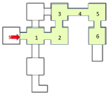
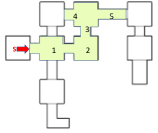
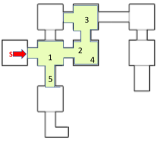
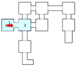
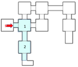
그림 5에 나타난 결과는 기준 모델인 A3C의 성능이 보상이 희소해질수록 저하되는 반면, 호기심 기반 A3C 에이전트는 모든 경우에서 우수함을 보여준다. "조밀한" 보상 케이스에서 호기심 기반 에이전트는 훨씬 더 빠르게 학습하며, 이는 기준 에이전트의 -그리디 탐색에 비해 환경을 더 효율적으로 탐색함을 나타낸다. ICM에 비해 ICM-pixels의 성능이 떨어지는 한 가지 가능한 설명은, 매 에피소드마다 에이전트가 서로 다른 텍스처를 가진 17개의 방 중 하나에서 생성된다는 점이다. 텍스처의 수가 증가함에 따라 픽셀 예측 모델을 학습하는 것은 어렵다.
"희소한" 보상 케이스에서는 예상대로 기준 A3C 에이전트가 작업을 해결하는 데 실패하는 반면, 호기심 기반 A3C 에이전트는 작업을 빠르게 학습할 수 있다. 에이전트의 생성 위치가 고정되어 있어 ICM-pixels가 각 에피소드 시작 시 동일한 텍스처를 마주하므로, "조밀한" 보상 케이스에 비해 픽셀 예측 모델 학습이 더 쉬워지기 때문에 ICM-pixels와 ICM이 유사한 수렴 속도를 보인다는 점에 주목하자. 마지막으로, "매우 희소한" 보상 케이스에서는 A3C 에이전트와 ICM-pixels 모두 전혀 성공하지 못하는 반면, ICM 에이전트는 무작위 실행 중 에서 완벽한 점수를 달성한다. 이는 어려운 목표 지향적 탐색 작업에서 ICM이 ICM-pixels 및 기본 A3C보다 더 적합함을 나타낸다.
제어 불가능한 역학에 대한 강건성
에이전트에게 영향을 미치지 않는 환경 변화에 대해 제안된 ICM 공식의 강건성을 테스트하기 위해, 이미지의 을 차지하는 고정된 영역의 백색 잡음으로 에이전트의 관측을 보강했다 (그림 3(b) 참조). VizDoom 3D 네비게이션에서, 이 잡음은 에이전트에게 아무런 영향을 미치지 않으며 단지 방해 요소일 뿐이므로 이상적으로는 에이전트가 이 잡음에 영향을 받지 않아야 한다. 그림 6는 위에서 설명한 "희소한" 보상 설정에서 ICM과 몇 가지 기준 방법의 성능을 비교한다. 제안된 ICM 에이전트는 완벽한 점수를 달성하는 반면, ICM-pixels는 입력에 잡음이 추가되지 않았을 때 "희소한 보상" 작업에서 성공했음에도 불구하고 성능이 크게 저하된다 (그림 5(b) 참조). 이는 ICM-pixels와 대조적으로 ICM이 환경의 무의미한 변화에 민감하지 않음을 나타낸다.
TRPO-VIME과의 비교
이제 위에서 설명한 VizDoom "희소한" 보상 설정에 대해 본 연구의 호기심 기반 에이전트와 TRPO(Houthooft et al., 2016)로 학습된 변분 정보 최대화(VIME) 에이전트를 비교한다. TRPO는 일반적으로 A3C보다 샘플 효율성이 높지만 실제 실행 시간(wall-clock time)이 훨씬 더 많이 소요된다. TRPO와 A3C는 설정이 다르기 때문에 이 결과들을 그래프로 표시하지는 않는다. TRPO 및 VIME 결과의 하이퍼파라미터와 정확도는 동시 연구인 (Fu et al., 2017)을 따른다. TRPO의 샘플 효율성에도 불구하고, 본 연구의 ICM 에이전트가 수렴 속도와 정확도 측면 모두에서 TRPO 및 TRPO-VIME보다 현저히 더 잘 작동함을 확인할 수 있다. 결과는 아래 표에 나와 있다:
| Method | Mean (Median) Score |
|---|---|
| (“sparse” reward setup) | (at convergence) |
| TRPO | 26.0 % (0.0 %) |
| A3C | 0.0 % (0.0 %) |
| VIME + TRPO | 46.1 % (27.1 %) |
| ICM + A3C | 100.0 % (100.0 %) |
정상성 검증(sanity check)으로서, 호기심 네트워크를 무작위 노이즈 소스로 대체하고 이를 호기심 보상으로 사용했다. 균등 분포, 가우시안 분포, 라플라스 분포 등 "희소한" 보상 케이스에서 다양한 분포 매개변수에 대해 체계적인 탐색을 수행했다. 이러한 에이전트 중 어느 것도 목표에 도달하지 못했음을 확인했으며, 이는 본 연구의 호기심 모듈이 퇴화된 해(degenerate solutions)를 학습하지 않음을 보여준다.
4.2 보상이 없는 설정 (No Reward Setting)
좋은 탐색 정책은 에이전트가 아무런 목표가 없을 때도 가능한 한 많은 상태를 방문할 수 있도록 하는 것이다. 3D 내비게이션의 경우, 좋은 탐색 정책은 지도를 최대한 많이 커버하는 것을 기대하며, 게임을 플레이하는 경우 가능한 한 많은 게임 상태를 방문하는 것을 기대한다. 에이전트가 좋은 탐색 정책을 학습할 수 있는지 테스트하기 위해, 우리는 환경으로부터 어떠한 보상도 없이 VizDoom과 Mario에서 에이전트를 훈련했다. 그런 다음 이 설정에서 지도의 어느 부분이 탐색되었는지(VizDoom의 경우)와 얼마나 많은 진전을 이루었는지(Mario의 경우)를 평가했다. 놀랍게도, 두 경우 모두 보상이 없는 에이전트가 상당히 우수한 성능을 보임을 발견했다(http://pathak22.github.io/noreward_rl/의 비디오 참조).
VizDoom: 탐색 중 커버리지. 외재적 보상 없이 훈련된 에이전트는 3D Doom 환경에서 복도를 탐색하고, 방 사이를 걸어 다니며, 많은 방을 탐색하는 방법을 배울 수 있었다. 여러 차례에 걸쳐 에이전트는 전체 지도를 횡단하여 초기화된 방에서 가장 멀리 떨어진 방에 도달했다. 에피소드가 2100단계에서 종료되고 가장 먼 방이 (최적으로 이동하는 에이전트 기준으로) 250단계 이상 떨어져 있다는 점을 고려하면, 이 결과는 매우 놀라운 것이며, 보상에 대한 외부 감독 없이도 유용한 기술을 학습하는 것이 가능하다는 것을 보여준다. 탐색 예시는 그림 7에 나와 있다. 처음 3개의 지도는 우리 에이전트가 외재적 신호 없이, 상태 공간의 국소 최솟값 주변을 헤매는 경우가 많아(예: 벽에 부딪혀 움직이지 못함, 비디오 참조) 어려움을 겪는 무작위 탐색 에이전트(마지막 두 지도)에 비해 훨씬 더 큰 상태 공간을 탐색함을 보여준다.
Mario: 보상 없이 게임 플레이 학습하기. 우리는 호기심 기반 신호만을 사용하여 Super Mario World에서 에이전트를 훈련한다. 환경으로부터의 외재적 보상 없이도, 우리의 Mario 에이전트는 레벨-1의 이상을 통과하는 법을 배울 수 있다. 에이전트는 적을 처치하거나 피하는 것, 또는 치명적인 이벤트를 피하는 것에 대해 아무런 보상을 받지 못했지만, 자동으로 이러한 행동들을 발견했다(비디오 참조). 한 가지 가능한 이유는 적에게 죽으면 게임 공간의 아주 일부분만 보게 되어 호기심이 포화되기 때문일 것이다. 호기심을 유지하기 위해, 게임 공간의 새로운 부분에 도달할 수 있도록 적을 처치하고 피하는 방법을 배우는 것이 에이전트의 이익에 부합한다. 이는 호기심이 흥미로운 행동을 학습하기 위한 간접적인 감독을 제공함을 시사한다.
4.3 새로운 시나리오로의 일반화
이전 섹션에서 우리는 에이전트가 호기심 기반 탐색 정책이 훈련된 공간의 넓은 부분을 탐색하는 법을 학습함을 보여주었다. 그러나 에이전트가 환경을 효율적으로 탐색하기 위한 "일반화된 기술"을 학습하여 이를 수행한 것인지, 아니면 단순히 훈련 세트를 암기한 것인지는 여전히 불분명하다. 즉, 공간을 탐색할 때 학습된 행동 중 얼마나 많은 부분이 특정 공간에 국한되고, 얼마나 많은 부분이 새로운 시나리오에서 유용할 만큼 일반적인지 알고자 한다. 이 질문을 조사하기 위해, 우리는 한 시나리오(예: Mario의 레벨-1)에서 보상 없는 탐색 행동을 훈련한 다음, 결과로 얻은 탐색 정책을 세 가지 다른 방식으로 평가한다. a) 학습된 정책을 새로운 시나리오에 "있는 그대로" 적용, b) 호기심 보상만을 사용하여 미세 조정(fine-tuning)함으로써 정책을 적응, c) 일부 외재적 보상을 최대화하도록 정책을 적응. 다행히도 세 가지 경우 모두에서 유망한 일반화 결과를 관찰할 수 있었다:
| Level Ids | Level-1 | Level-2 | Level-3 | ||||||
|---|---|---|---|---|---|---|---|---|---|
| Accuracy | Scratch | Run as is | Fine-tuned | Scratch | Scratch | Run as is | Fine-tuned | Scratch | Scratch |
| Iterations | 1.5M | 0 | 1.5M | 1.5M | 3.5M | 0 | 1.5M | 1.5M | 5.0M |
| Mean stderr | 711 59.3 | 31.9 4.2 | 466 37.9 | 399.7 22.5 | 455.5 33.4 | 319.3 9.7 | 97.5 17.4 | 11.8 3.3 | 42.2 6.4 |
| distance 200 | 50.0 0.0 | 0 | 64.2 5.6 | 88.2 3.3 | 69.6 5.7 | 50.0 0.0 | 1.5 1.4 | 0 | 0 |
| distance 400 | 35.0 4.1 | 0 | 63.6 6.6 | 33.2 7.1 | 51.9 5.7 | 8.4 2.8 | 0 | 0 | 0 |
| distance 600 | 35.8 4.5 | 0 | 42.6 6.1 | 14.9 4.4 | 28.1 5.4 | 0 | 0 | 0 | 0 |
"있는 그대로" 평가:
우리는 Mario의 레벨-1에서 호기심을 최대화하여 훈련된 정책을, 학습된 정책을 전혀 수정하지 않고 후속 레벨에서 평가한다. 표 1에 나타난 바와 같이, 레벨 1, 2, 3에서 이 정책을 실행한 결과로 에이전트가 이동한 거리를 측정한다. 레벨-3이 레벨-1에 비해 다른 구조와 적들을 가지고 있음에도 불구하고 정책이 레벨 3에서 놀라울 정도로 잘 수행되어 좋은 일반화 성능을 보여준다. 그러나 레벨-2에서 "있는 그대로" 실행하는 것은 잘 수행되지 않음에 주목하라. 처음에는 이것이 레벨-3에서의 일반화 결과와 모순되는 것처럼 보인다. 그러나 레벨-3은 레벨-1과 유사한 전역적 시각적 외관(햇빛이 비치는 낮 세계)을 가지는 반면, 레벨-2는 상당히 다르다(밤 세계). 만약 이것이 실제로 문제라면, 약간의 "미세 조정"을 통해 탐색 정책을 레벨-2에 빠르게 적응시키는 것이 가능해야 한다. 아래에서 이를 살펴보겠다.
호기심만을 이용한 미세 조정:
표 1에서 볼 수 있듯이, 레벨-1에서 사전 훈련된(보상으로 호기심만 사용) 에이전트를 레벨-2에서 미세 조정(보상으로 호기심만 사용)할 때, 전역적 시각적 외관의 불일치를 빠르게 극복하고 동일한 반복 횟수로 처음부터 훈련하는 것보다 더 높은 점수를 달성한다. 흥미롭게도, 레벨-2에서 "처음부터" 훈련하는 것은 사전 훈련과 미세 조정을 합친 것보다 더 많은 반복 횟수로 훈련하더라도 미세 조정된 정책보다 성능이 떨어진다. 한 가지 가능한 이유는 레벨-2가 레벨-1보다 더 어렵기 때문에, 이동하기, 점프하기, 적 처치하기와 같은 기본 기술을 처음부터 배우는 것이 상대적으로 "안전한" 레벨-1에서 배우는 것보다 훨씬 더 위험하기 때문이다. 따라서 이 결과는 먼저 이전 레벨에서 사전 훈련을 한 다음 이후 레벨에서 미세 조정을 하는 것이 학습과 일반화를 돕는 일종의 커리큘럼을 생성함을 시사할 수 있다. 즉, 에이전트는 레벨-1을 플레이하면서 습득한 지식을 사용하여 후속 레벨을 더 잘 탐색할 수 있다. 물론, 게임 디자이너들은 인간 플레이어가 점진적으로 게임 플레이를 배울 수 있도록 의도적으로 이와 같이 설계한다.
그러나 흥미롭게도, 레벨-1에서 사전 훈련된 탐색 정책을 레벨-3에 미세 조정하는 것은 "있는 그대로" 실행하는 것에 비해 성능을 저하시킨다. 이는 에이전트가 레벨-3의 특정 지점을 넘어가기가 매우 어렵기 때문이다. 에이전트는 호기심 장벽에 부딪혀 더 이상 진전을 이루지 못한다. 에이전트는 이미 어려운 지점 이전의 환경 부분에 대해 학습했기 때문에 호기심 보상을 거의 받지 못하며, 결과적으로 거의 제로에 가까운 내재적 보상으로 정책을 업데이트하려고 시도하여 정책이 서서히 퇴화한다. 이 행동은 지루함과 막연하게 유사한데, 에이전트가 진전을 이루지 못하면 지루해져서 탐색을 중단하게 된다.
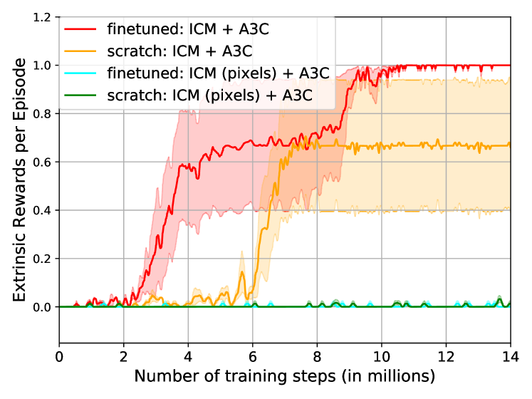
외재적 보상을 이용한 미세 조정:
에이전트가 실제로 유용한 탐색 행동을 학습했다면, 환경에서 외부 보상이 제공될 때도 처음부터 시작하는 것보다 더 빠르게 학습할 수 있어야 한다. 우리는 그림 4(a)에 표시된 맵에서 호기심 보상을 사용하여 에이전트를 사전 훈련한 VizDoom에서 이 평가를 수행한다. 그런 다음 앞서 섹션 4.1에서 설명한 대로 새로운 텍스처를 가진 다른 맵(그림 4(b) 참조)을 사용하는 'DoomMyWayHome-v0' 환경의 "매우 희소한" 보상 설정에서 테스트한다.
그림 8의 결과는 호기심만으로 사전 훈련된 후 외부 보상으로 미세 조정된 ICM 에이전트가, 호기심과 외부 보상을 공동으로 최대화하도록 처음부터 훈련된 ICM 에이전트보다 더 빠르게 학습하고 더 높은 보상을 달성함을 보여준다. 이 결과는 에이전트가 환경에 의해 지정된 목표를 달성해야 할 때도 학습된 탐색 행동이 유용함을 확인해 준다. 또한 ICM-pixels는 이 테스트 환경에 일반화되지 않는다는 점도 주목할 가치가 있다. 이는 제안된 호기심 측정 메커니즘이 원시 감각 공간에서 호기심을 측정하는 것에 비해 일반화되는 기술을 학습하는 데 훨씬 더 우수함을 나타낸다.
5 관련 연구
호기심 기반 탐색은 강화 학습 문헌에서 잘 연구된 주제이며, 이에 대한 좋은 요약은 (Oudeyer et al., 2007; Oudeyer & Kaplan, 2009)에서 찾을 수 있다. Schmidhuber (1991; 2010) 및 Sun 등(2011)은 놀라움(surprise)과 압축 진행(compression progress)을 내재적 보상으로 사용한다. Kearns 등(1999)과 Brafman 등(2002)의 고전적인 연구는 상태 공간 매개변수 수에 대한 다항식 시간의 탐색 알고리즘을 제안한다. 다른 연구들은 행동의 엔트로피에 기반한 정보 이득인 임파워먼트(empowerment)를 내재적 보상으로 사용했다(Klyubin et al., 2005; Mohamed & Rezende, 2015). Stadie 등(2015)은 탐색할 흥미로운 상태의 측정값으로 오토인코더의 특징 공간에서의 예측 오차를 사용한다. 상태 방문 횟수 또한 탐색을 위해 연구되었다(Oh et al., 2015; Bellemare et al., 2016; Tang et al., 2016). Osband 등(2016)은 다중 가치 함수를 훈련하고 탐색을 위해 부트스트랩 및 톰슨 샘플링(Thompson sampling)을 활용한다. 많은 접근 방식이 탐색을 위해 정보 이득을 측정한다(Still & Precup, 2012; Little & Sommer, 2014; Storck et al., 1995). Houthooft 등(2016)은 환경 역학에 대한 에이전트의 믿음의 정보 이득을 최대화하는 탐색 전략을 사용한다. 특징 공간을 학습하기 위해 순방향 모델과 역방향 모델을 공동으로 훈련하는 우리의 접근 방식은 (Jordan & Rumelhart, 1992; Wolpert et al., 1995; Agrawal et al., 2016)과 유사성이 있지만, 이러한 연구들은 탐색 대신 행동 시퀀스를 계획하기 위해 학습된 역학 모델을 사용한다. 의미론적 특징 임베딩을 학습하기 위해 프록시 태스크(proxy task)를 사용하는 아이디어는 컴퓨터 비전 분야의 자기지도 학습에 관한 여러 연구(Goroshin et al., 2015; Agrawal et al., 2015; Doersch et al., 2015; Jayaraman & Grauman, 2015; Wang & Gupta, 2015; Pathak et al., 2016)에서 사용되었다.
동시기 연구 (Concurrent work): 본 논문이 제출되는 동안 Arxiv에 다수의 흥미로운 관련 논문들이 발표되었다. Sukhbaatar 등 (2017)은 미세 조정(fine-tuning) 중 데이터 효율성을 향상시키기 위해 두 에이전트 간의 비대칭 자가 플레이(asymmetric self-play)를 통해 사전 학습(pre-training)을 위한 지도 신호를 생성한다. 여러 방법들은 자기지도 예측(self-supervised prediction) 기반의 보조 태스크를 사용하여 강화학습(RL) 알고리즘의 데이터 효율성을 향상시킬 것을 제안한다 (Jaderberg et al., 2017; Shelhamer et al., 2017). Fu 등 (2017)은 판별 모델(discriminative models)을 학습하며, Gregor 등 (2017)은 희소한 보상 설정에서 탐색 문제를 해결하기 위해 임파워먼트(empowerment) 기반의 측정 방식을 사용한다.
6 토의 (Discussion)
본 연구에서 우리는 고차원 시각적 입력으로 확장 가능하고, 픽셀을 예측해야 하는 어려운 문제를 우회하며, 에이전트의 탐색 전략이 환경의 무관한 요인(nuisance factors)에 영향을 받지 않도록 보장하는 호기심 기반 내재적 보상 신호 생성 메커니즘을 제안한다. 우리는 제안하는 에이전트가 호기심이 없는 베이스라인 A3C, 최근 탐색을 위해 제안된 VIME (Houthooft et al., 2016) 공식화, 그리고 베이스라인 픽셀 예측 공식화를 유의미하게 능가함을 보여준다.
VizDoom에서 우리의 에이전트는 환경으로부터 어떠한 보상도 받지 않고 복도를 따라 이동하고 방을 가로지르는 탐색 행동을 학습한다. Mario에서 우리의 에이전트는 게임으로부터 어떠한 보상도 받지 않고 Level-1의 30% 이상을 통과한다. 에이전트가 이 한계를 넘지 못하는 한 가지 이유는 게임의 38% 지점에 함정(pit)이 존재하여 이를 뛰어넘기 위해 15-20개의 매우 구체적인 키 입력 시퀀스가 필요하기 때문이다. 에이전트가 이 시퀀스를 실행하지 못하면 함정에 빠져 사망하게 되고, 환경으로부터 더 이상의 보상을 받지 못한다. 따라서 함정 너머에 잠재적으로 탐색할 수 있는 세계가 존재함을 나타내는 어떠한 그래디언트 정보도 받지 못한다. 이 문제는 호기심 모델 개발과는 다소 독립적(orthogonal)이지만, 정책 학습(policy learning)에 있어서는 도전적인 과제를 제시한다.
강화학습 접근법을 학습에 사용된 것과 동일한 환경에서 평가하는 것이 일반적인 관행이다. 그러나 우리는 별도의 "테스트 세트"에서도 평가하는 것이 중요하다고 생각한다. 이를 통해 학습된 내용 중 얼마나 많은 부분이 학습 환경에 특화(즉, 암기)되었는지, 그리고 새로운 환경에 적용될 수 있는 "일반화 가능한 기술(generalizable skills)"이 얼마나 되는지 가늠할 수 있다. 본 논문에서 우리는 두 가지 방식으로 일반화를 평가한다. 1) 학습된 정책을 새로운 시나리오에 "있는 그대로"(추가 학습 없이) 적용하는 방식, 2) 학습된 정책을 새로운 시나리오에서 미세 조정(fine-tuning)하는 방식(심층 특징 학습 문헌에서 사전 학습/미세 조정 명칭을 차용함)이다. 우리는 일반화를 평가하는 것이 가치 있는 도구이며, 학계가 다양한 강화학습 알고리즘의 성능을 더 잘 이해할 수 있게 해줄 것이라 믿는다. 이러한 노력에 기여하고자, 우리는 알고리즘 코드뿐만 아니라 테스트 및 환경 설정도 온라인에 자유롭게 공개할 예정이다.
향후 연구의 흥미로운 방향은 학습된 탐색 행동/기술을 더 복잡한 계층적 시스템에서 운동 프리미티브(motor primitive)/저수준 정책(low-level policy)으로 사용하는 것이다. 예를 들어, 우리의 VizDoom 에이전트는 벽에 부딪히는 대신 복도를 따라 걷는 법을 학습한다. 이는 네비게이션 시스템에 유용한 프리미티브가 될 수 있다.
풍부하고 다양한 현실 세계는 상호작용을 위한 충분한 기회를 제공하지만, 보상 신호는 희소하다. 우리의 접근법은 이러한 설정에서 탁월한 성능을 발휘하며, 에이전트에 영향을 미치는 예상치 못한 상호작용을 내재적 보상으로 변환한다. 그러나 우리의 접근법은 "상호작용의 기회" 자체가 매우 드문 시나리오에는 직접적으로 확장되지 않는다. 이론적으로는 이러한 이벤트를 리플레이 메모리(replay memory)에 저장하고 탐색을 안내하는 데 사용할 수 있을 것이다. 하지만 이러한 확장은 향후 연구 과제로 남겨둔다.
감사의 글 (Acknowledgements):
유익한 토론과 의견을 나누어 준 Sergey Levine, Evan Shelhamer, Saurabh Gupta, Phillip Isola 및 BAIR 연구실의 다른 멤버들에게 감사드린다. 그림 2에 도움을 준 Jacob Huh와 VizDoom 맵을 제공해 준 Alexey Dosovitskiy에게 감사를 표한다. 본 연구는 NSF IIS-1212798, IIS-1427425, IIS-1536003, IIS-1633310, ONR MURI N00014-14-1-0671, Berkeley DeepDrive, Nvidia의 장비 지원, 그리고 Valrhona 강화학습 펠로우십의 지원을 일부 받아 수행되었다.
References
- Agrawal et al. (2015) Agrawal, Pulkit, Carreira, Joao, and Malik, Jitendra. Learning to see by moving. In ICCV, 2015.
- Agrawal et al. (2016) Agrawal, Pulkit, Nair, Ashvin, Abbeel, Pieter, Malik, Jitendra, and Levine, Sergey. Learning to poke by poking: Experiential learning of intuitive physics. NIPS, 2016.
- Bellemare et al. (2016) Bellemare, Marc, Srinivasan, Sriram, Ostrovski, Georg, Schaul, Tom, Saxton, David, and Munos, Remi. Unifying count-based exploration and intrinsic motivation. In NIPS, 2016.
- Brafman & Tennenholtz (2002) Brafman, Ronen I and Tennenholtz, Moshe. R-max-a general polynomial time algorithm for near-optimal reinforcement learning. JMLR, 2002.
- Brockman et al. (2016) Brockman, Greg, Cheung, Vicki, Pettersson, Ludwig, Schneider, Jonas, Schulman, John, Tang, Jie, and Zaremba, Wojciech. Openai gym. arXiv:1606.01540, 2016.
- Clevert et al. (2015) Clevert, Djork-Arné, Unterthiner, Thomas, and Hochreiter, Sepp. Fast and accurate deep network learning by exponential linear units (elus). arXiv:1511.07289, 2015.
- Doersch et al. (2015) Doersch, Carl, Gupta, Abhinav, and Efros, Alexei A. Unsupervised visual representation learning by context prediction. In ICCV, 2015.
- Dosovitskiy & Koltun (2016) Dosovitskiy, Alexey and Koltun, Vladlen. Learning to act by predicting the future. ICLR, 2016.
- Fu et al. (2017) Fu, Justin, Co-Reyes, John D, and Levine, Sergey. Ex2: Exploration with exemplar models for deep reinforcement learning. arXiv:1703.01260, 2017.
- Goroshin et al. (2015) Goroshin, Ross, Bruna, Joan, Tompson, Jonathan, Eigen, David, and LeCun, Yann. Unsupervised feature learning from temporal data. arXiv:1504.02518, 2015.
- Gregor et al. (2017) Gregor, Karol, Rezende, Danilo Jimenez, and Wierstra, Daan. Variational intrinsic control. ICLR Workshop, 2017.
- Houthooft et al. (2016) Houthooft, Rein, Chen, Xi, Duan, Yan, Schulman, John, De Turck, Filip, and Abbeel, Pieter. Vime: Variational information maximizing exploration. In NIPS, 2016.
- Jaderberg et al. (2017) Jaderberg, Max, Mnih, Volodymyr, Czarnecki, Wojciech Marian, Schaul, Tom, Leibo, Joel Z, Silver, David, and Kavukcuoglu, Koray. Reinforcement learning with unsupervised auxiliary tasks. ICLR, 2017.
- Jayaraman & Grauman (2015) Jayaraman, Dinesh and Grauman, Kristen. Learning image representations tied to ego-motion. In ICCV, 2015.
- Jordan & Rumelhart (1992) Jordan, Michael I and Rumelhart, David E. Forward models: Supervised learning with a distal teacher. Cognitive science, 1992.
- Kearns & Koller (1999) Kearns, Michael and Koller, Daphne. Efficient reinforcement learning in factored mdps. In IJCAI, 1999.
- Kempka et al. (2016) Kempka, Michał, Wydmuch, Marek, Runc, Grzegorz, Toczek, Jakub, and Jaśkowski, Wojciech. Vizdoom: A doom-based ai research platform for visual reinforcement learning. arXiv:1605.02097, 2016.
- Klyubin et al. (2005) Klyubin, Alexander S, Polani, Daniel, and Nehaniv, Chrystopher L. Empowerment: A universal agent-centric measure of control. In Evolutionary Computation, 2005.
- Lillicrap et al. (2016) Lillicrap, Timothy P, Hunt, Jonathan J, Pritzel, Alexander, Heess, Nicolas, Erez, Tom, Tassa, Yuval, Silver, David, and Wierstra, Daan. Continuous control with deep reinforcement learning. ICLR, 2016.
- Little & Sommer (2014) Little, Daniel Y and Sommer, Friedrich T. Learning and exploration in action-perception loops. Closing the Loop Around Neural Systems, 2014.
- Lopes et al. (2012) Lopes, Manuel, Lang, Tobias, Toussaint, Marc, and Oudeyer, Pierre-Yves. Exploration in model-based reinforcement learning by empirically estimating learning progress. In NIPS, 2012.
- Mirowski et al. (2017) Mirowski, Piotr, Pascanu, Razvan, Viola, Fabio, Soyer, Hubert, Ballard, Andy, Banino, Andrea, Denil, Misha, Goroshin, Ross, Sifre, Laurent, Kavukcuoglu, Koray, et al. Learning to navigate in complex environments. ICLR, 2017.
- Mnih et al. (2015) Mnih, Volodymyr, Kavukcuoglu, Koray, Silver, David, Rusu, Andrei A, Veness, Joel, Bellemare, Marc G, Graves, Alex, Riedmiller, Martin, Fidjeland, Andreas K, Ostrovski, Georg, et al. Human-level control through deep reinforcement learning. Nature, 2015.
- Mnih et al. (2016) Mnih, Volodymyr, Badia, Adria Puigdomenech, Mirza, Mehdi, Graves, Alex, Lillicrap, Timothy P, Harley, Tim, Silver, David, and Kavukcuoglu, Koray. Asynchronous methods for deep reinforcement learning. In ICML, 2016.
- Mohamed & Rezende (2015) Mohamed, Shakir and Rezende, Danilo Jimenez. Variational information maximisation for intrinsically motivated reinforcement learning. In NIPS, 2015.
- Oh et al. (2015) Oh, Junhyuk, Guo, Xiaoxiao, Lee, Honglak, Lewis, Richard L, and Singh, Satinder. Action-conditional video prediction using deep networks in atari games. In NIPS, 2015.
- Osband et al. (2016) Osband, Ian, Blundell, Charles, Pritzel, Alexander, and Van Roy, Benjamin. Deep exploration via bootstrapped dqn. In NIPS, 2016.
- Oudeyer & Kaplan (2009) Oudeyer, Pierre-Yves and Kaplan, Frederic. What is intrinsic motivation? a typology of computational approaches. Frontiers in neurorobotics, 2009.
- Oudeyer et al. (2007) Oudeyer, Pierre-Yves, Kaplan, Frdric, and Hafner, Verena V. Intrinsic motivation systems for autonomous mental development. Evolutionary Computation, 2007.
- Paquette (2016) Paquette, Philip. Super mario bros. in openai gym. github:ppaquette/gym-super-mario, 2016.
- Pathak et al. (2016) Pathak, Deepak, Krahenbuhl, Philipp, Donahue, Jeff, Darrell, Trevor, and Efros, Alexei A. Context encoders: Feature learning by inpainting. In CVPR, 2016.
- Poupart et al. (2006) Poupart, Pascal, Vlassis, Nikos, Hoey, Jesse, and Regan, Kevin. An analytic solution to discrete bayesian reinforcement learning. In ICML, 2006.
- Ryan (2000) Ryan, Richard; Deci, Edward L. Intrinsic and extrinsic motivations: Classic definitions and new directions. Contemporary Educational Psychology, 2000.
- Schmidhuber (1991) Schmidhuber, Jurgen. A possibility for implementing curiosity and boredom in model-building neural controllers. In From animals to animats: Proceedings of the first international conference on simulation of adaptive behavior, 1991.
- Schmidhuber (2010) Schmidhuber, Jürgen. Formal theory of creativity, fun, and intrinsic motivation (1990–2010). IEEE Transactions on Autonomous Mental Development, 2010.
- Shelhamer et al. (2017) Shelhamer, Evan, Mahmoudieh, Parsa, Argus, Max, and Darrell, Trevor. Loss is its own reward: Self-supervision for reinforcement learning. arXiv:1612.07307, 2017.
- Silvia (2012) Silvia, Paul J. Curiosity and motivation. In The Oxford Handbook of Human Motivation, 2012.
- Singh et al. (2005) Singh, Satinder P, Barto, Andrew G, and Chentanez, Nuttapong. Intrinsically motivated reinforcement learning. In NIPS, 2005.
- Stadie et al. (2015) Stadie, Bradly C, Levine, Sergey, and Abbeel, Pieter. Incentivizing exploration in reinforcement learning with deep predictive models. NIPS Workshop, 2015.
- Still & Precup (2012) Still, Susanne and Precup, Doina. An information-theoretic approach to curiosity-driven reinforcement learning. Theory in Biosciences, 2012.
- Storck et al. (1995) Storck, Jan, Hochreiter, Sepp, and Schmidhuber, Jürgen. Reinforcement driven information acquisition in non-deterministic environments. In ICANN, 1995.
- Sukhbaatar et al. (2017) Sukhbaatar, Sainbayar, Kostrikov, Ilya, Szlam, Arthur, and Fergus, Rob. Intrinsic motivation and automatic curricula via asymmetric self-play. arXiv:1703.05407, 2017.
- Sun et al. (2011) Sun, Yi, Gomez, Faustino, and Schmidhuber, Jürgen. Planning to be surprised: Optimal bayesian exploration in dynamic environments. In AGI, 2011.
- Tang et al. (2016) Tang, Haoran, Houthooft, Rein, Foote, Davis, Stooke, Adam, Chen, Xi, Duan, Yan, Schulman, John, De Turck, Filip, and Abbeel, Pieter. # exploration: A study of count-based exploration for deep reinforcement learning. arXiv:1611.04717, 2016.
- Wang & Gupta (2015) Wang, Xiaolong and Gupta, Abhinav. Unsupervised learning of visual representations using videos. In ICCV, 2015.
- Wolpert et al. (1995) Wolpert, Daniel M, Ghahramani, Zoubin, and Jordan, Michael I. An internal model for sensorimotor integration. Science-AAAS-Weekly Paper Edition, 1995.